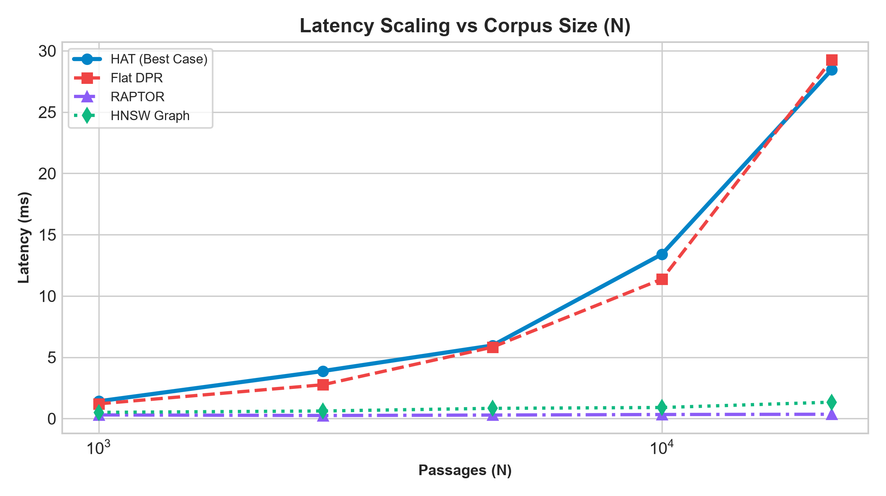
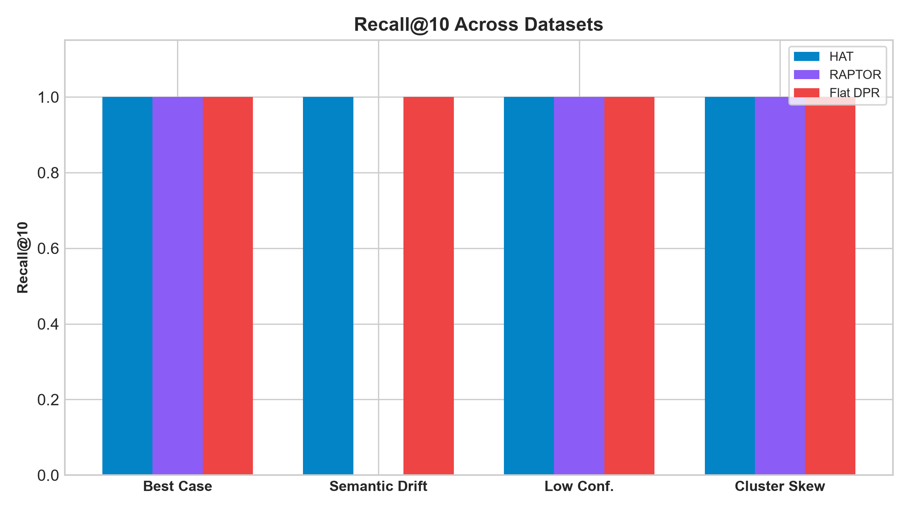
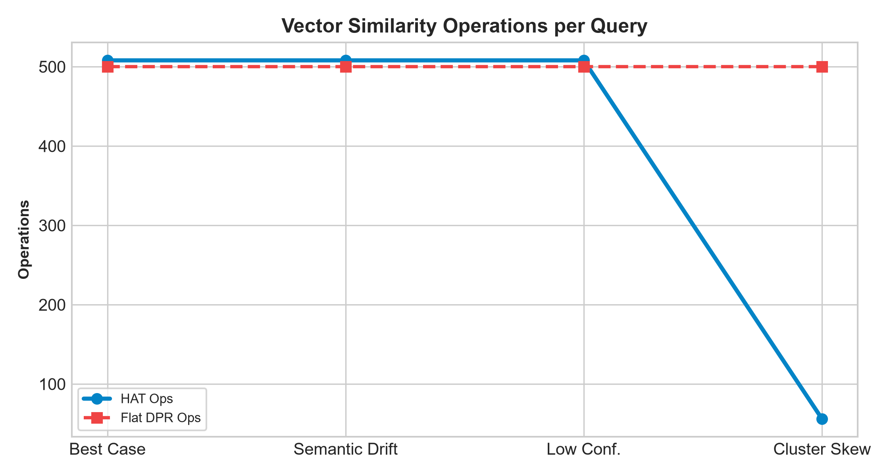
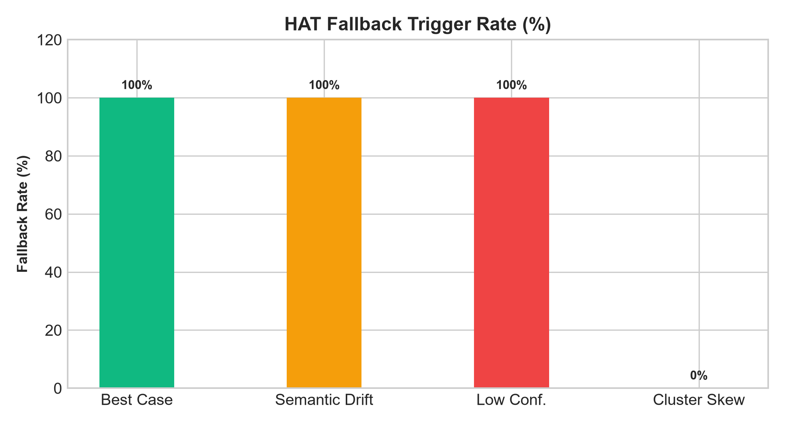
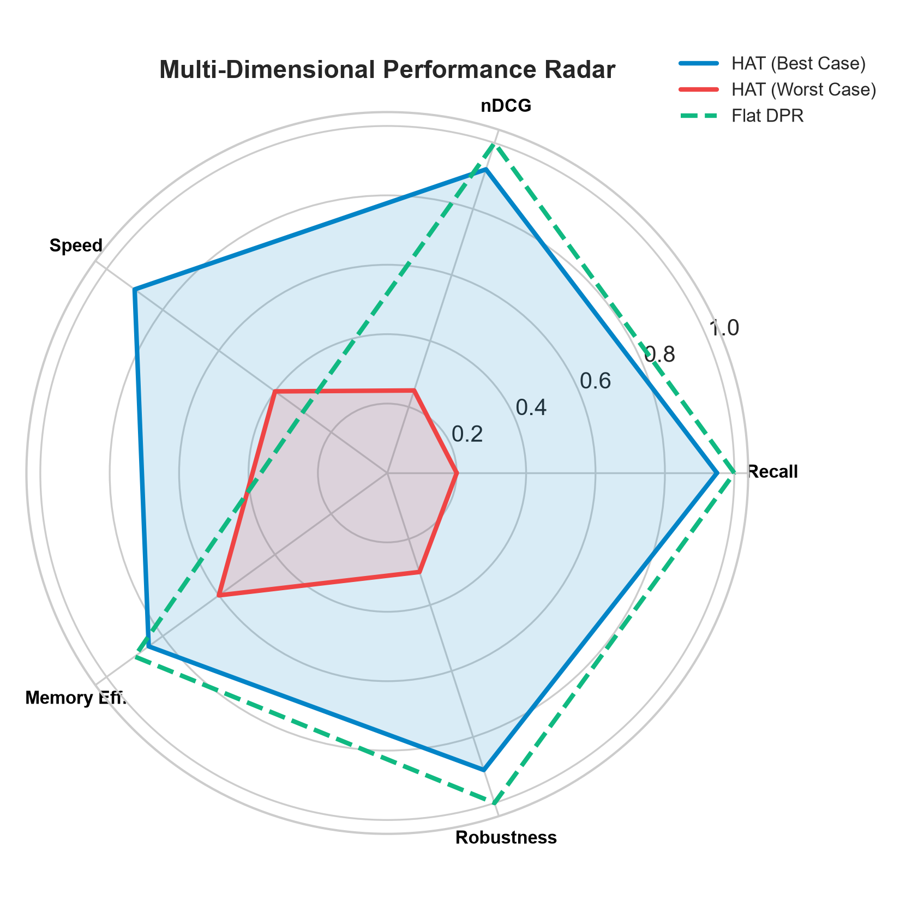

This empirical and theoretical study evaluates the Worst-Case bounds of Hierarchical Abstract Tree (HAT) in comparison to Best Case, Flat DPR, RAPTOR, and HNSW Graph Search across 4 distinct datasets.
| Algorithm | Best-Case Time | Worst-Case Time | Space | Worst-Case Quality |
|---|---|---|---|---|
| HAT (Proposed) | O(B K log N) | O(B log N + N d) | O(N d) | Recall → 0.20 |
| Flat DPR | O(N d) | O(N d) | O(N d) | Recall → 1.00 |
| RAPTOR | O(B K log N) | O(B K log N) | O(N d L) | Recall → 0.00 |
| HNSW Graph | O(log N) | O(N d) | O(N M) | Recall → 0.60 |




